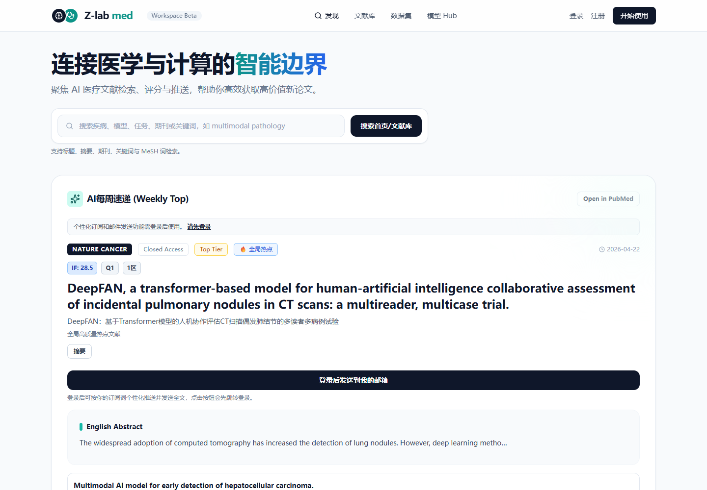
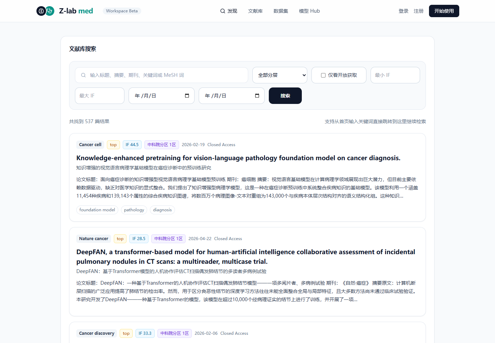
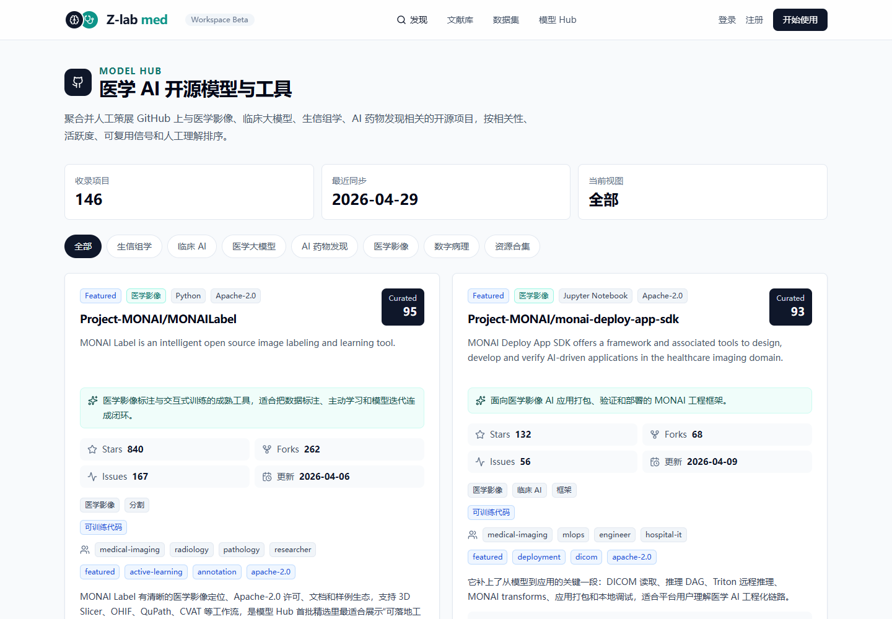
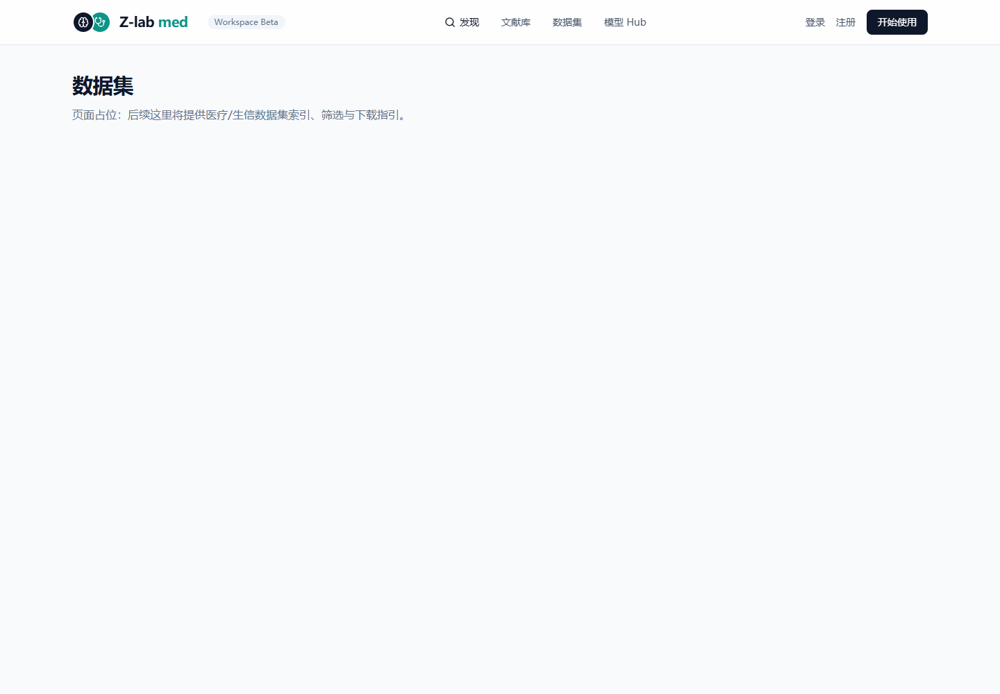

医学AI科研，为什么需要更干净的信息入口
智医研 Z-lab med 官网功能速览：文献检索、AI 评分、每周推送与医学开源模型策展。
做医学 AI 科研，最消耗人的往往不是读论文本身。
是找。是筛。是反复确认一篇论文到底值不值得读，一个 GitHub 项目到底能不能复现，一个看起来很热的方向到底有没有真实研究价值。
这件事听上去琐碎，但它决定了科研工作的起点质量。起点歪了，后面很多努力都会变得很贵。
Z-lab med 想做的不是又一个信息收藏夹，而是一个面向医学 AI 研究者的“第一轮判断系统”。
它把论文、期刊指标、AI 摘要、个性化推送和开源模型项目放在同一个工作流里，让研究者少一点无效搜索，多一点可执行判断。

首页：先从一篇值得读的论文开始
打开 Z-lab med，最先看到的是一个很直接的入口：搜索疾病、模型、任务、期刊或关键词，也支持标题、摘要、期刊、关键词和 MeSH 词检索。
这不是一个小细节。医学 AI 的检索词经常很散，同一个方向可能同时出现在疾病名、影像任务、模型类型、数据集描述和期刊摘要里。只按标题搜，漏掉的东西会很多。
首页的“AI 每周速递”会把近期高价值文献集中展示出来，包括期刊、影响因子、JCR 分区、中科院分区、开放获取状态、发布时间、英文标题、中文标题和摘要。以当前官网展示为例，首页推荐了 Nature Cancer、npj Precision Oncology、The Lancet Digital Health、Nature Medicine 等期刊中的医学 AI 论文。
更关键的是，它没有把 AI 摘要当成结论来卖。页面仍然保留 PubMed 跳转、原始摘要、期刊信息和访问状态。说白了，平台做的是“帮你缩短第一轮筛选”，不是替你完成科学判断。
适合的使用场景
每天快速扫一遍医学 AI 新论文，判断哪些需要精读、哪些可以放入选题池、哪些值得做复现或外部验证。
文献库：把“找论文”变成“筛证据”
文献库页面更像一个工作台。
当前线上页面显示已收录 537 篇结果，支持按 Top、Core、Emerging 分层筛选，也可以只看开放获取文献，还能设定影响因子范围和日期范围。对经常做课题追踪的人来说，这些筛选条件比单纯关键词列表有用得多。

我比较看重的一点，是它把论文标题和中文解读放在一起。医学 AI 论文经常横跨临床、影像、病理、生信、统计和工程实现，中文摘要不一定能替代原文，但能帮团队里的不同背景成员先对齐问题。
尤其是医工交叉团队。临床老师关心患者路径和诊断价值，算法同学关心模型结构和数据规模，研究生关心能不能复现。一个页面里同时看到期刊层级、摘要、关键词和中文转述，沟通成本会低很多。
这里也要克制一点
AI 摘要和机器翻译适合做入口，不适合当最终依据。真正写综述、立项或复现前，还是要回到原文、补充方法学检查和外部验证判断。
模型 Hub：把开源项目从热闹里捞出来
医学 AI 领域的 GitHub 项目不少，但“星标高”不等于“适合医学科研复用”。这中间差着许可证、维护状态、数据接口、任务边界、文档质量和临床风险提示。
这就是 Model Hub 的价值所在。当前官网显示已收录 146 个医学 AI 开源模型与工具，最近同步时间为 2026-04-29，分类覆盖生信组学、临床 AI、医学大模型、AI 药物发现、医学影像、数字病理和资源合集。

每个项目卡片不只列 Stars、Forks、Issues 和更新时间，还会给出 Curated 分数、技术标签、项目定位、推荐理由和边界提醒。比如 MONAI Label 被标记为医学影像标注与交互式训练工具，适合把数据标注、主动学习和模型迭代连成闭环；MONAI Deploy App SDK 则更偏医学影像 AI 应用打包、验证和部署。
这种写法其实很重要。它没有把“能跑”包装成“能临床用”，而是把适用范围说清楚：研究、评估、工程化、临床部署前验证，各有各的位置。
对准备做复现、选 baseline、搭建实验管线的团队来说，这比单纯给一个 GitHub 链接实用得多。
还在路上的功能，也值得提前看
官网里还有几个已经搭好入口、正在等待数据接入的模块：数据集、会议雷达、论文复现指南、开源项目库和我要推荐。
这些页面目前还是占位状态。这个信息不用回避，反而说明平台的方向比较清楚：文献只是起点，后面会接到数据集索引、顶会/期刊时间轴、10 分医学 AI 论文复现教程，以及用户推荐入口。

如果这些模块后续接通，Z-lab med 就不只是“看论文”的地方，而会更接近一个医学 AI 科研前期工作台：找文献、看模型、查数据、盯会议、做复现，最后回到自己的课题判断。
它适合谁？
如果你正在做医学影像 AI、多模态医疗、临床预测模型、生信组学、数字病理、AI 药物发现，或者只是想系统跟踪医学 AI 的论文和开源工具，Z-lab med 会比较合适。
它的定位不是替代 PubMed、GitHub 或期刊官网。更准确地说，它像一个前置过滤器，把分散的信息变成研究者能继续行动的列表。
科研从来不缺信息。缺的是有边界、有证据、有下一步的入口。
现在可以访问官网体验
网址：https://www.zlab-med.com/
建议先从首页的每周速递和文献库搜索开始，再进入 Model Hub 看看与你课题方向相关的开源工具。
注：本文基于 2026-04-29 访问官网时的公开页面内容整理。平台功能会继续迭代，具体展示以官网实时页面为准。